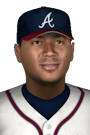

|
|
|  |
Young Star Helps Propel National League to Win in Midseason Classic Tuesday, July 14th, 2020 Major League Baseball put its best players on the field today, and the game certainly showed that. In the annual Midseason Classic, the National League came out over the American League by a final score of 9-1. Leading the way for the National League All-Stars was second baseman Ozzie Albies. "I go out there and do my best every game, All-Star game or not," the star said after his great show, going 3-for-4 in the contest. Lifetime Albies has hit for a .286 average and totaled 534 hits, 72 home runs and 262 RBIs. View Boxscore View Game Log Watch Highlights |


|